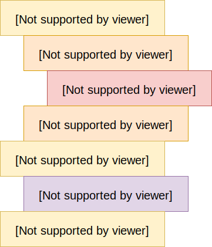
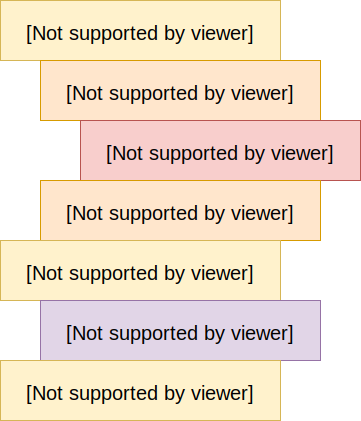

Sintassi di base
In questa sezione forniremo alcune regole sintattiche di base del linguaggio Python, le quali ci serviranno per scrivere in modo corretto il nostro codice.
Identificatori
Un identificatore è il nome con cui sono rappresentate costanti, variabili, metodi, classi e moduli. Un identificatore può essere costituito da una lettera maiuscola, minuscola o dal simbolo underscore seguito da altri caratteri, che a loro volta possono essere una qualsiasi combinazione di lettere maiuscole e minuscole, underscore e cifre. I caratteri minuscoli corrispondono alle lettere minuscole dell’alfabeto dalla a alla z, compreso il simbolo underscore, mentre i caratteri maiuscoli corrispondono alle lettere maiuscole dell’alfabeto dalla A alla Z e le cifre da 0 al 9. Il numero di caratteri che compongono il nome non è limitato.
Gli identificatori non possono contenere spazi vuoti o caratteri di punteggiatura, quali ad esempio @, $ e %. Python è un linguaggio case sensitive, ciò vuol dire che
Gli identificatori non possono contenere spazi vuoti o caratteri di punteggiatura, quali ad esempio @, $ e %. Python è un linguaggio case sensitive, ciò vuol dire che
var e Var sono due identificatori diversi. Vi sono inoltre alcune convenzioni di denominazione che vengono seguite all'interno della comunità di programmatori Python:
- gli identificatori delle classi cominciano con una lettera maiuscola, mentre gli altri identificatori cominciano con una lettera maiuscola;
- se un identificatore si compone di più parole, queste vengono separate da un underscore (es.
var_1).
| Tipo | Esempio | Significato |
|---|---|---|
| Single leading underscore | _var | Convenzione indicante che l'identificatore è destinato ad essere privato. |
| Single trailing underscore | var_ | Convenzione utilizzata per evitare conflitti con le parole chiave di Python. |
| Double leading underscore | __var | Utilizzata all'interno delle classi per innescare il cosiddetto name mangling. |
| Double leading and trailing underscore | __var__ | Usato come identificatore di metodi speciali definiti dal linguaggio Python. Questo tipo di identificatore non va usato per rappresentare le vostre variabili. |
| Single underscore | _ | Talvolta usato come identificatore per variabili temporanee o insignificanti |
Parole chiave
La lista seguente mostra le parole chiave di Python. Queste sono parole riservate che non possono essere usate come identificatori. Tutte le parole chiave di Python contengono solo lettere minuscole.
| Parole chiave | ||||
|---|---|---|---|---|
| and | assert | break | class | continue |
| def | del | elif | else | except |
| exec | finally | for | from | global |
| if | import | in | is | lambda |
| not | or | pass | raise | |
| return | try | while | with | yield |
Blocchi di codice
Ogni programma Python si compone dei seguenti tipi di blocchi di codice:
-
main: si tratta del blocco principale, che include tutti gli altri, e che pertanto comincia all'inizio del programma e termina alla fine dello stesso; -
if...elif...else: tali blocchi definiscono i costrutti condizionali del programma; -
forewhile: sono i blocchi che definiscono i cicli iterativi del programma; -
try...except...else...finally: sono blocchi impiegati nella gestione delle eccezioni e degli errori del programma. -
def functioneclass Class: si tratta dei blocchi che introducono le funzioni e le classi del programma;
Indentazione del codice
Una caratteristica essenziale del linguaggio di programmazione Python è il metodo che utilizza per delimitare i blocchi di codice, e cioè l’indentazione. Per indentazione del codice, si intende quella tecnica utilizzata nella programmazione attraverso la quale si evidenziano dei blocchi di programma con l’inserimento di una certa quantità di spazio vuoto all’inizio di una riga di testo, allo scopo di aumentarne la leggibilità. Così ogni riga viene indentata di un certo numero di spazi che dipende dalla sua posizione all’interno della struttura logica del programma. L'indentazione inizia un blocco e la rimozione dell'indentazione lo termina. Un esempio schematico di indentazione è fornito dalla figura seguente, nella quale è possibile riconoscere i diversi blocchi di codice sulla base del loro livello di indentazione. Si noti in particolare che il blocco

Dunque Python, invece di usare parentesi o parole chiave, usa l’indentazione stessa per indicare i blocchi nidificati; a tal proposito si possono usare sia una tabulazione, sia un numero arbitrario di spazi bianchi, ma lo standard Python prevede 4 spazi bianchi. Nella fattispecie, si aggiungono 4 nuovi spazi se si vuole incominciare un nuovo blocco, e si rimuovono 4 spazi se si vuole terminare un blocco esistente.
La cosa da ricordare è che l'indentazione in Python non è facoltativa ma è una regola, nel senso che se si omette l’indentazione allora l’interprete ci restituirà un messaggio di errore. A titolo di esempio, si consideri il seguente codice, correttamente indentato, che rappresenta una classica struttura condizionale, e che si compone, oltre che del blocco
main, definito in tal caso come Blocco 1, è l'unico non indentato, così come deve essere. 
Dunque Python, invece di usare parentesi o parole chiave, usa l’indentazione stessa per indicare i blocchi nidificati; a tal proposito si possono usare sia una tabulazione, sia un numero arbitrario di spazi bianchi, ma lo standard Python prevede 4 spazi bianchi. Nella fattispecie, si aggiungono 4 nuovi spazi se si vuole incominciare un nuovo blocco, e si rimuovono 4 spazi se si vuole terminare un blocco esistente.
La cosa da ricordare è che l'indentazione in Python non è facoltativa ma è una regola, nel senso che se si omette l’indentazione allora l’interprete ci restituirà un messaggio di errore. A titolo di esempio, si consideri il seguente codice, correttamente indentato, che rappresenta una classica struttura condizionale, e che si compone, oltre che del blocco
main (che d'ora in poi ometteremo), da un blocco if e da un blocco else:
if True: # blocco main
print('True') # blocco if
else: # blocco main
print('False') # blocco else
Ebbene, se proviamo a eliminare l'indentazione dal suddetto codice, ovvero se scriviamo:
if True:
print('True')
else:
print('False')
allora l'interprete Python restituirà il messaggio di errore:
IndentationError: expected an indented block
Istruzioni multi-linea
Le istruzioni in Python tipicamente terminano con l'andata a capo. Tuttavia, è consentito l'uso del carattere di continuazione (
\) per indicare che l'istruzione continua alla linea successiva. Ad esempio:
total = item_one + \
item_two + \
item_three
Le istruzioni contenute all'interno delle parentesi
(), [] o {} non necessitano dell'utilizzo del carattere di continuazione. Ad esempio:
days = ['Monday', 'Tuesday', 'Wednesday',
'Thursday', 'Friday']
Virgolette
Python accetta singole (
Le triple virgolette sono usate per estendere il contenuto della stringa su più righe. Ad esempio, tutte le seguenti istruzioni sono consentite:
'), doppie (") e triple (''' o """) virgolette per indicare i valori letterali di una stringa, purché lo stesso tipo di virgolette inizi e termini la stringa.Le triple virgolette sono usate per estendere il contenuto della stringa su più righe. Ad esempio, tutte le seguenti istruzioni sono consentite:
parola = 'parola'
frase = "Questa è una frase."
paragrafo = """Questo è un paragrafo. Esso si
compone di più righe e frasi."""
Commenti
Il cancelletto (
#), quando non si trova all'interno di una stringa letterale, definisce l'inizio un commento. Tutti i caratteri dopo il simbolo #, e fino alla fine della riga, faranno parte del commento e l'interprete Python li ignorerà. Si consideri ad esempio lo script:
# primo commento
print('Hello, Python!') # secondo commento
Tale script, quando eseguito, produrrà il risultato seguente:
Hello, Python!
I commenti che si estendono su più righe saranno invece delimitati dalle triple virgolette
""":
"""
questo è un commento che si dilunga
su più righe.
"""
print('Hello, Python!')